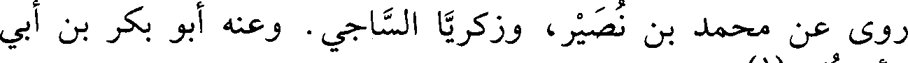

File: 001080.gt.txt (if the image is defective, simply delete all Arabic text and the line will be excluded)
المعدل.
File: 001081.gt.txt (if the image is defective, simply delete all Arabic text and the line will be excluded)

روى عن محمد بن نصير، وزكريا الساجي. وعنه أبو بكر بن أبي
File: 001082.gt.txt (if the image is defective, simply delete all Arabic text and the line will be excluded)
علي، وأبو نعيم(1)، وغيرهما.
File: 001083.gt.txt (if the image is defective, simply delete all Arabic text and the line will be excluded)
توفي في سلخ ذي القعدة.
File: 001084.gt.txt (if the image is defective, simply delete all Arabic text and the line will be excluded)

76 - عبدالعزيز بن إسحاق بن جعفر، أبو القاسم الزيدي
File: 001085.gt.txt (if the image is defective, simply delete all Arabic text and the line will be excluded)

البغدادي.
File: 001086.gt.txt (if the image is defective, simply delete all Arabic text and the line will be excluded)
ذكره ابن أبي الفوارس، فقال : كان له مذهب خبيث، ولم يكن في
File: 001087.gt.txt (if the image is defective, simply delete all Arabic text and the line will be excluded)
الرواية بذاك. سمعت منه أجزاء فيها أحاديث ردية.
File: 001088.gt.txt (if the image is defective, simply delete all Arabic text and the line will be excluded)
قلت : يعرف بابن البقال، حدث عن الباغندي، وعلي بن العباس
File: 001089.gt.txt (if the image is defective, simply delete all Arabic text and the line will be excluded)
المقانعي.
File: 001090.gt.txt (if the image is defective, simply delete all Arabic text and the line will be excluded)
قال التنوخي: كان من متكلمي الشيعة، له مصنفات على مذهب
File: 001091.gt.txt (if the image is defective, simply delete all Arabic text and the line will be excluded)
الزيدية، يجمع حديثا كثيرا، وله أخ شاعر مشهور(2) .
File: 001092.gt.txt (if the image is defective, simply delete all Arabic text and the line will be excluded)
77 - عبدالعزيز بن جعفر بن أحمد بن يزداد، أبو بكر الفقيه
File: 001093.gt.txt (if the image is defective, simply delete all Arabic text and the line will be excluded)
الحنبلي، غلام الخلال، شيخ الحنابلة وعالمهم المشهور.
File: 001094.gt.txt (if the image is defective, simply delete all Arabic text and the line will be excluded)
تفقه بأستاذه أبي بكر الخلال، وسمع من عبدالله بن أحمد بن حنبل
File: 001095.gt.txt (if the image is defective, simply delete all Arabic text and the line will be excluded)
عيسى النحوي، وأبو القاسم الداركي، وابن الدقاق الفقيه، وشكوا إليه ما
File: 001096.gt.txt (if the image is defective, simply delete all Arabic text and the line will be excluded)
دهم الإسلام من هذه الحادثة العظمى، فوعدهم بالغزو، ونادى بالنفير في
File: 001097.gt.txt (if the image is defective, simply delete all Arabic text and the line will be excluded)

الناس، فخرج من العوام خلق عدد الرمل، ثم جهز جيشا، وغزوا فهزموا
File: 001098.gt.txt (if the image is defective, simply delete all Arabic text and the line will be excluded)
الروم، وقتلوا منهم مقتلة كبيرة، وأسروا أميرهم وجماعة من بطارقته،
File: 001099.gt.txt (if the image is defective, simply delete all Arabic text and the line will be excluded)
وأنفذت رؤوس القتلى إلى بغداد، وفرح المؤمنون بنصر الله.
File: 001100.gt.txt (if the image is defective, simply delete all Arabic text and the line will be excluded)
وصادر بختيار بن بويه المطيع، فقال: أنا ليس لي غير الخطبة، فإن
File: 001101.gt.txt (if the image is defective, simply delete all Arabic text and the line will be excluded)
أحببتم اعتزلت، فشددوا عليه حتى باع قماشه، وحمل أربع مئة ألف درهم،
File: 001102.gt.txt (if the image is defective, simply delete all Arabic text and the line will be excluded)
فأنفقها ابن بويه في أغراضه، وأهمل الغزو، وشاع في الألسنة أن الخليفة
File: 001103.gt.txt (if the image is defective, simply delete all Arabic text and the line will be excluded)
صودر، كما شاع قبله أن القاهر بالله كدي يوم جمعة، فانظر إلى تقلبات
File: 001104.gt.txt (if the image is defective, simply delete all Arabic text and the line will be excluded)
الدهر!
File: 001105.gt.txt (if the image is defective, simply delete all Arabic text and the line will be excluded)
وفي شهر رمضان قتل رجل من أعوان الوالي في بغداد، فبعث الرئيس
File: 001106.gt.txt (if the image is defective, simply delete all Arabic text and the line will be excluded)
أبو الفضل الشيرازي - وكان قد أقامه عز الدولة على الوزارة - من طرح النار
File: 001107.gt.txt (if the image is defective, simply delete all Arabic text and the line will be excluded)
من النحاسين إلى السماكين، فاحترق حريق عظيم لم يشهد مثله، واحترقت
File: 001108.gt.txt (if the image is defective, simply delete all Arabic text and the line will be excluded)
أموال عظيمة وجماعة كثيرة من النساء، والرجال، والصبيان، والأطفال في
File: 001109.gt.txt (if the image is defective, simply delete all Arabic text and the line will be excluded)
الدور وفي الحمامات، فأحصى ما أحرق من بغداد فكان سبعة عشر وثلاث
To Save: `Ctrl+s`, make sure to choose `Webpage, complete`!